TrustZone
Getting Started on PIC32CK SG01 Curiosity Ultra Development Board
Description
This application demonstrates the TrustZone feature on the PIC32CK
SG01 microcontroller (MCU). The application has two projects pertaining
to Secure and Non-Secure modes of PIC32CK SG01 that work together on the
same MCU and offers security isolation between the trusted and the
non-trusted resources in the device.
The application includes Basic and Extended functionalities.
- Basic application:
- The Secure mode application toggles an LED (LED0 toggles when the
switch SW0 is pressed) on a timeout basis and the periodicity of the
timeout will change from 500 milliseconds to one second, two seconds,
four seconds, and back to 500 milliseconds every time you press the
switch SW0 on the PIC32CK SG01 Curiosity Ultra Development Board.
- The Non-secure application requests the Secure mode application,
reads the LED toggling rate and prints on the serial terminal. The LED
toggling rate data is transferred to the Non-secure mode application
when it requests to Secure application through Non-Secure Callables
(NSC).
- Extended application:
The Secure mode application reads the current room temperature
from the temperature sensor on the I/O1 Xplained Pro Extension Kit every
500 milliseconds. Further, the application writes the temperature
readings to EEPROM and reads when a request is received from the
Non-secure mode application. Also, a green LED (LED0) is toggled every
time the temperature display request is received from the Non-secure
mode application. The periodicity of the temperature values reading can
be changed to 1 second, 2 seconds, 4 seconds, and back to 500
milliseconds whenever the user presses the switch SW0 on the PIC32CK
SG01 Curiosity Ultra Development Board. The temperature readings are
transferred to the Non-secure mode application when it requests to
Secure application through Non-Secure Callables (NSC).
The Non-secure mode application requests the Secure mode
application the temperature values and prints them on a serial console
once it receives from the Secure mode application. Further, when it gets
a request from the user (in the form of a key press on the serial
console), it will request the Secure mode application to retrieve the
last five stored temperature values in the EEPROM. The Non-secure
application prints the last five stored temperature values on the
console. Also, a red LED (LED1) is toggled every time the temperature
values are read from EEPROM.
Modules/Technology Used:
- Peripheral Modules
- Secure PORT Pins (All pins by default are secure)
- Secure I2C
- Secure RTC
- Secure EIC
- Non-secure USART
- Non-secure DMAC
- Non-secure PORT Pins (USART Pins only)
Hardware Used:
This project has been verified to work with
the following versions of software tools:
Refer Manifest for Secure
and NonSecure
projects present in harmony-manifest-success.yml under the project
folder firmware/{Secure or
NonSecure}/firmware/src/config/pic32ck_sg01_cult
- Refer the Release Notes to
know the MPLAB X IDE and MCC Plugin
version. Alternatively, Click
Here.
- Any Serial Terminal application like Tera Term terminal
application.
Because Microchip regularly update tools,
occasionally issue(s) could be discovered while using the newer versions
of the tools. If the project doesn’t seem to work and version
incompatibility is suspected, It is recommended to double-check and use
the same versions that the project was tested with. To download
original version of MPLAB Harmony v3 packages, refer to document How
to Use the MPLAB Harmony v3 Project Manifest Feature
Note: The Application is built and developed using
PIC32CK-SG_DFP version 1.2.161. Please use PIC32CK-SG_DFP version
1.2.161 or above to build this Application. If you need help regarding
the DFP versions, Kindly contact Microchip Sales.
Hardware Setup 1:
- The PIC32CK SG01 Curiosity Ultra Development Board allows the
Embedded Debugger (PKoB4) to be used for debugging.
- Connect the Type-A male to Micro-B USB cable to Micro-B DEBUG USB
port (J900) to power and debug the PIC32CK SG01 Curiosity Ultra
Development Board
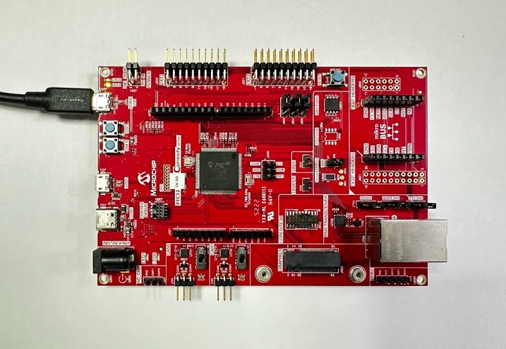
- The PIC32CK SG01 Curiosity Ultra Development Board allows the
Embedded Debugger (PKoB4) to be used for debugging. Connect the Type-A
male to micro-B USB cable to the micro-B DEBUG USB port to power and
debug the PIC32CK SG01 Curiosity Ultra Development Board.
Hardware Setup 2:
- The PIC32CK SG01 Curiosity Ultra Development Board allows the
Embedded Debugger (PKoB4) to be used for debugging.
- Connect the Type-A male to Micro-B USB cable to Micro-B DEBUG USB
port (J900) to power and debug the PIC32CK SG01 Curiosity Ultra
Development Board
- To test the extended functionality, connect the I/O1
Xplained Pro Extension Kit to the extension header EXT1 (J500) on
the PIC32CK SG01 Curiosity Ultra Development Board.
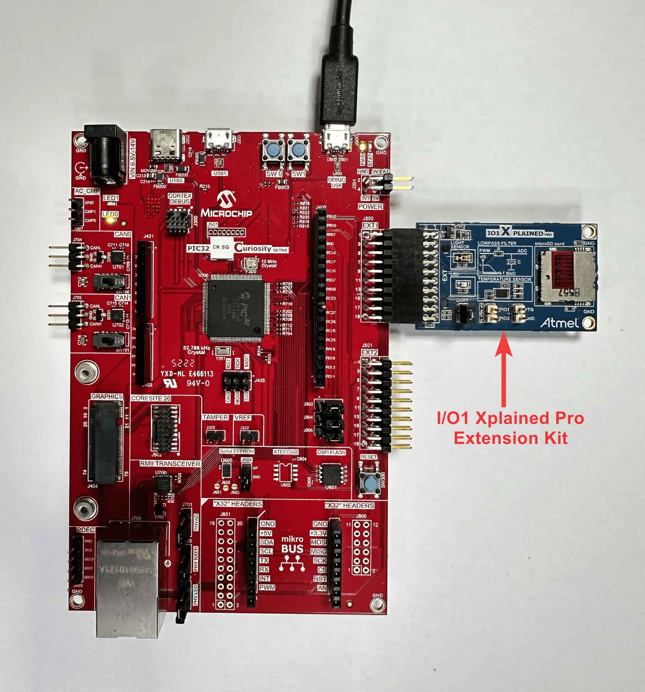
TrustZone
Application Development Use Cases
There are two use cases:
- Single Developer (This application demonstrates a
single developer use case)
- Dual Developer
1. Single Developer
2. Dual Developer
- The dual developer use case involves two developers.
- Initially, Developer A is responsible for developing the Secure
application; then, Developer B is responsible for developing the
Non-Secure application.
- Refer Comments for more details on the
“Dual Developer Application Development Use Case”
Programming Methods:
- The device can be programmed in two ways
- Refer Method 1: Programming using the
prebuilt hex file.
- Refer Method 2: Programming by
opening and building the application project.
Method 1:
Steps for Programming prebuilt hex file:
- The TrustZone project will have Secure and Non-Secure pre-built hex
files
- Program Secure hex file first followed by the Non-Secure hex
file
- The following are the steps to program these hex files
- Download and extract the pic32ck_sg01_cult_tz_getting_started
project, if not done already.
- Open MPLAB X IDE
- Close all existing projects in IDE, if any project is opened
Step 1: Program the
Secure Project hex file
Go to File -> Import -> Hex/ELF File
In the “Import Image File” window,
- Step 1 - Create Prebuilt Project,
- Click the “Browse” button to select the prebuilt
“pic32ck_sg01_cult_Secure.X.production.hex” file from
project path
“pic32ck_sg01_cult_tz_getting_started/hex”
- Select Device as “PIC32CK2051SG01144”
- Ensure “PIC32CK SG01 Curiosity Ultra” is selected
under “Hardware Tool” and click “Next”
button
- Step 2 - Select Project Name and Folder,
- Select appropriate project name and folder and click
“Finish” button
Once the project opens, set the
“pic32ck_sg01_cult_Secure.X.prebuilt” project as Main
Project by right clicking on the project.
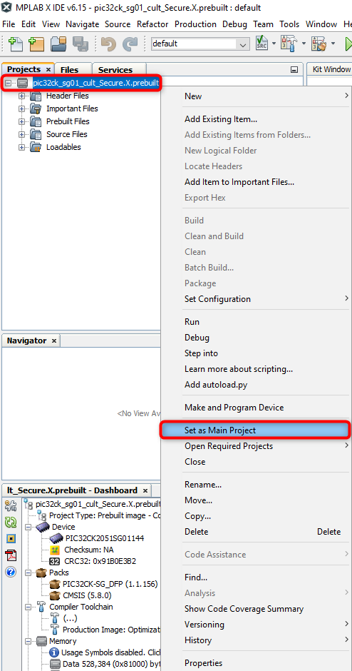
Go to project properties and set Program Options under PKoB4
categories to erase and program only Secure memory region.
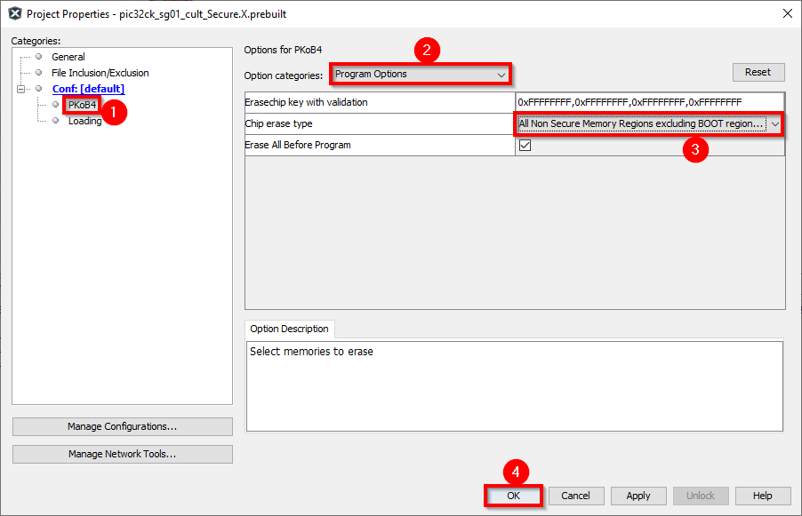
In MPLAB X IDE, click on “Make and Program
Device” button to program the device.
Step 2: Program
the Non-Secure Project hex file
Go to File -> Import -> Hex/ELF File
In the “Import Image File” window,
- Step 1 - Create Prebuilt Project,
- Click the “Browse” button to select the prebuilt
“pic32ck_sg01_cult_NonSecure.X.production.hex” file
from project path
“pic32ck_sg01_cult_tz_getting_started/hex”
- Select Device as “PIC32CK2051SG01144”
- Ensure “PIC32CK SG01 Curiosity Ultra” is selected
under “Hardware Tool” and click “Next”
button
- Step 2 - Select Project Name and Folder,
- Select appropriate project name and folder and click
“Finish” button
Once the project opens, set the
“pic32ck_sg01_cult_NonSecure.X.prebuilt” project as
Main Project by right clicking on the project.

In the “pic32ck_sg01_cult_NonSecure.X.prebuilt”
project, right click on Loadables folder and click on “Add
Loadable File” to add Secure Gateway veneer library as shown
below.

Select “pic32ck_sg01_cult_Secure_sg_veneer.lib”
veneer library.
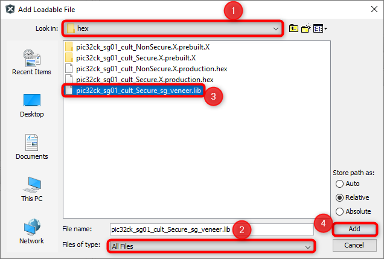
Expand Loadables folder to confirm that the veneer library is
added to the Non-Secure project.
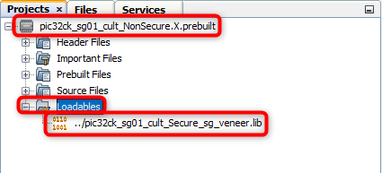
Go to project properties and set Program Options under PKoB4
categories to erase and program only Non-Secure memory region.

In MPLAB X IDE, click on “Make and Program
Device” button to program the device.
Follow the steps in Running the
Demo section below
Method 2:
Programming/Debugging Application Project:
- The Trustzone project can be opened in two ways.
Procedure 1:
- Open MPLAB X IDE
- Close all existing projects in IDE (if any project is opened)
- Go to File -> Open Project
- Go to reference_apps repo path and navigate to
following path
<reference_apps_path>/apps/pic32ck_sg01_cult/pic32ck_sg01_cult_tz_getting_started
- Select “firmware” folder, enable “Open Required Projects” and click
on “Open Project” button
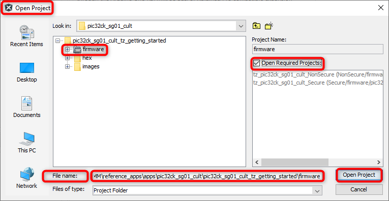
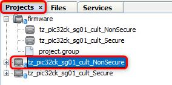
- Once the project opens, set the “tz_pic32ck_sg01_cult_NonSecure”
project as Main Project by right clicking on the project.
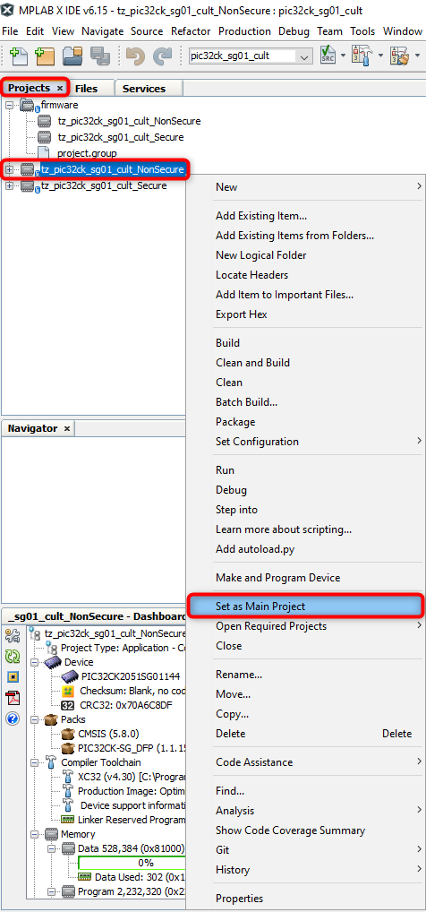
Procedure 2:
- Ensure “PIC32CK SG01 Curiosity Ultra” is selected as hardware tool
to program/debug the application.
- Build the code and program the device by clicking on the “Make and
Program Device” button in MPLAB X IDE tool bar
- Follow the steps in “Running the Demo” section below.
- Note:
- Windows OS has a maximum path length of 260 characters and a
command-line limitation for Windows OS of 8191 characters. For details,
see 6.5.5
Path, File and Folder Name Restrictions.
- The TrustZone based project come with long path name, hence the
project build may fail due to exceeding Windows maximum path
length.
- Workaround: Move the project folder to C:/ drive to
reduce the project path length then open in MPLAB X IDE to build the
project.
Running the Demo:
- Basic functionality
- Perform Hardware Setup 1 steps mentioned
above, if not done already.
- Open the Tera Term terminal application on your PC (from the
Windows® Start menu by pressing the Start button).
- Set the baud rate to 115200.
- Reset or power cycle the device. LED0 toggles for every 500
milliseconds during power cycle.
- An LED (LED0) on the PIC32CK SG01 Curiosity Ultra Development Board
toggles on every timeout basis and the default periodicity of the
timeout is 500 milliseconds.
- And also, the LED toggling rate is displayed on the serial
terminal.
- Press the switch SW0 on the PIC32CK SG01 Curiosity Ultra Development
Board to change the periodicity of the timeout to one second.
- Every subsequent pressing of the switch SW0 on the PIC32CK SG01
Curiosity Ultra Development Board changes the periodicity of the timeout
to 2 seconds, 4 seconds, 500 milliseconds, and back to 1 second in
cyclic order.
- See the following figure for the output.

- Extended functionality using I/O1
Xplained Pro Extension Kit:
Perform Hardware Setup 2 steps mentioned
above, if not done already.
Open the Tera Term terminal application on your PC (from the
Windows® Start menu by pressing the Start button)
Change the baud rate to 115200
Press SW1 to start the running the extended
functionality.
You should see the temperature values (in °F) being displayed on
the terminal every 500 milliseconds, as shown below

Also, notice the LED0 blinking at 500 millisecond rate
You may vary the temperature by placing your finger on the
temperature sensor (for a few seconds)

Press the switch SW0 on PIC32CK SG01 Curiosity
Ultra Development Board to change the default sampling rate to 1
second.
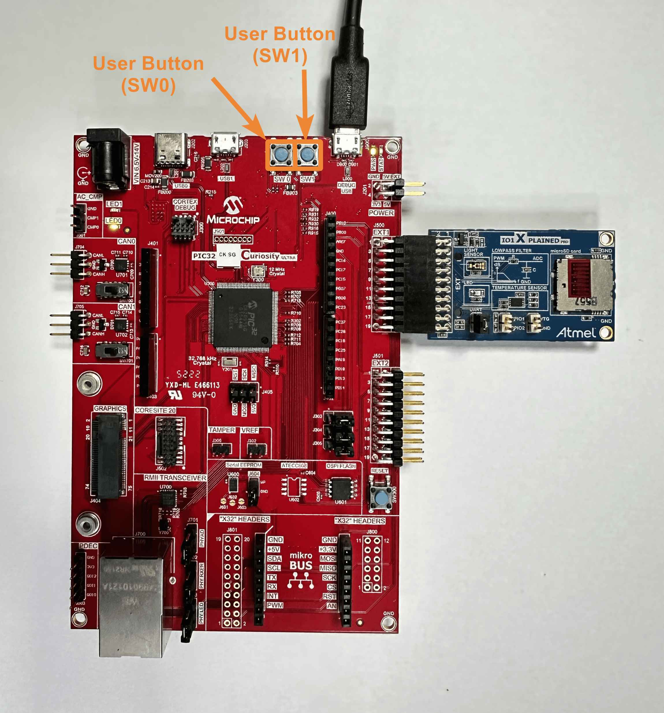

Every subsequent pressing of switch SW0 on
PIC32CK SG01 Curiosity Ultra Development Board changes the default
sampling rate to 2 seconds, 4 seconds, and 500 ms and back to 1 second
in cyclic order as shown below.
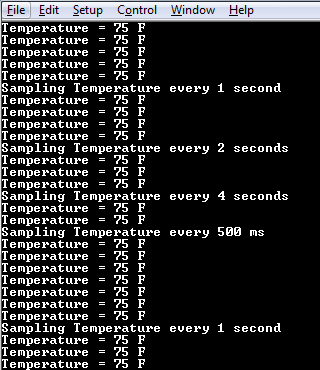
While the temperature sampling rate changes on every switch
SW0 press, notice the LED0 toggling at the same
sampling rate
Press any character on the terminal to display the last five
values written to the EEPROM. Notice that a red LED (LED1) will be
toggled when a key is pressed in the serial console to read the
temperature values from the secure EEPROM.
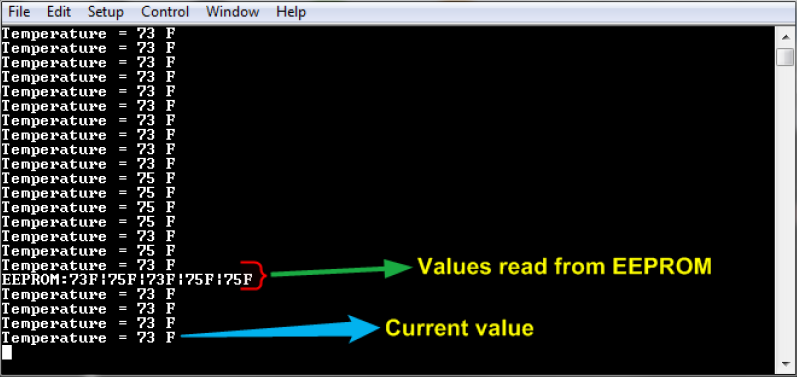
Anytime press SW1 to start running basic
functionality shown in Basic
functionality
- Dual
Developer Application Development Use Case with TrustZone on SAM L11
Using MPLAB Harmony v3
- Note: Though this technical brief is on SAM L11
MCUs, the TrustZone concepts it describes also applies to PIC32CM MC
LS00 MCUs.
- This application demo builds and works out of box by following the
instructions above in “Running the Demo” section. If you need to
enhance/customize this application demo, you need to use the MPLAB
Harmony v3 Software framework. Refer links below to setup and build your
applications using MPLAB Harmony.
Revision:
- v1.7.0 - Released demo application